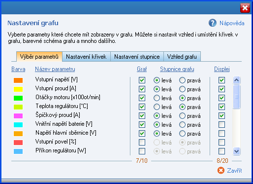
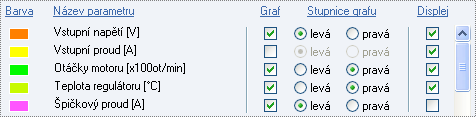
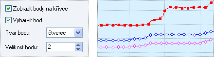
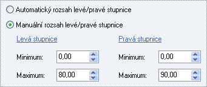
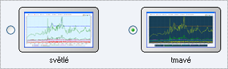

|
|
V tomto okně naleznete různá nastavení pro grafy monitorování a historie. Mù�ete zde nastavit zobrazení parametrù v grafu, mìnit vzhled a umístìní køivek v grafu, mìnit barevné schéma grafu, a další funkce.

1. Vıbìr parametrù
V této èásti mù�ete nastavit:
a) nastavení barvy parametru ve sloupci Barva. Poklepáním na barevnı ètvereèek se zobrazí okno s vıbìrem barvy, kde si mù�ete libovolnì zmìnit barvu ka�dého parametru. Nastavení ovlivòuje barvu køivky v grafu, a barvu parametru v oknì Displej monitorování. b) ve sloupci Graf se vybírají parametry, které se budou zobrazovat v grafu. V sousedním sloupci Stupnice grafu se pak nastavuje pøiøazení køivky k levé nebo pravé svislé stupnici grafu. Mù�ete si napø. k pravé stupnici pøiøadit všechny køivky, které mají vìtší rozsah hodnot, a u pravé osy nechat køivky s menším rozsahem hodnot. Zobrazení køivek v grafu se tak stane pøehlednìjší. c) ve sloupci Displej se vybírají parametry, které se budou zobrazovat v oknì Displej monitorování.

2. Nastavení køivek
Pro zvıraznìní zobrazení køivek v grafu mù�ete zapnout a upravit zobrazení bodù na køivkách. Nastavení je zvláš� pro køivky levé stupnice a zvláš� pro køivky pravé stupnice.
a) zobrazit body na køivce - zapne nebo vypne zobrazení bodù na køivce. b) vybarvit bod - barva bodu bude stejná jako barva køivky. c) tvar bodu - nastavení tvaru bodu, na vıbìr je ze 3 tvarù: ètverec, kruh, diamant. d) velikost bodu - nastavení velikosti bodu.

3. Nastavení stupnice
U svislé stupnice grafu je mo�né nastavit buï automatickı rozsah, kdy rozsah stupnice bude øízen grafem, nebo manuální rozsah, kdy si u�ivatel sám urèí zaèátek (minimum) a konec (maximum) stupnice. Nastavení je zvláš� pro levou a zvláš� pro pravou stupnici grafu.

4. Vzhled grafu
Barevné schéma grafu nabízí možnost zvolit si světlé nebo tmavé pozadí grafu. Zároveň s barvou pozadí se nastaví i výchozí barva všech křivek: pro světlé pozadí se nastaví tmavé barvy křivek, pro tmavé pozadí pak světlé barvy křivek, tak aby bylo zobrazení křivek co nejvíce zřetelné. Pokud si u křivek nastavíte své vlastní barvy, pak si aplikace bude pamatovat vaše nastavení barev zvlášť pro světlé schéma a zvlášť pro tmavé schéma.

Zobrazit mřížku v grafu - zobrazí nebo skryje mřížku v grafu (horizontální a vertikální čáry pro snadnější orientaci v hodnotách grafu).
|